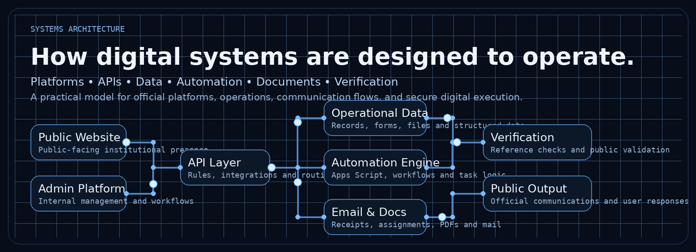
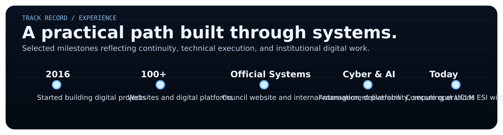
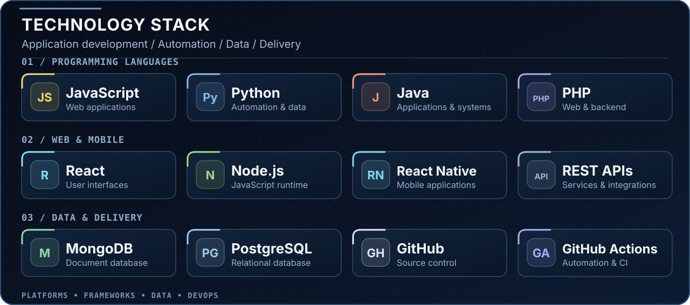
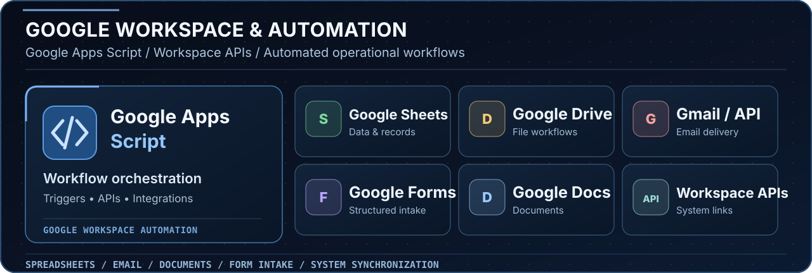
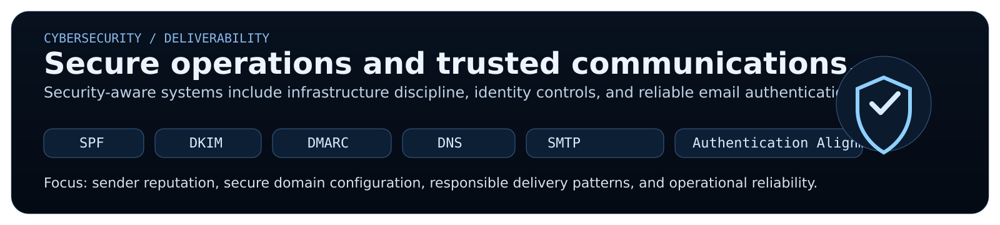
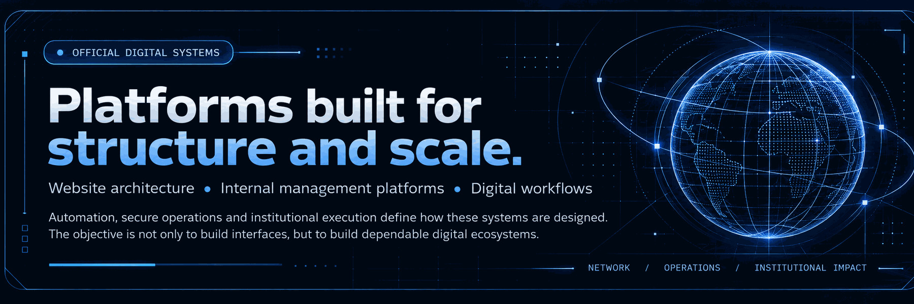
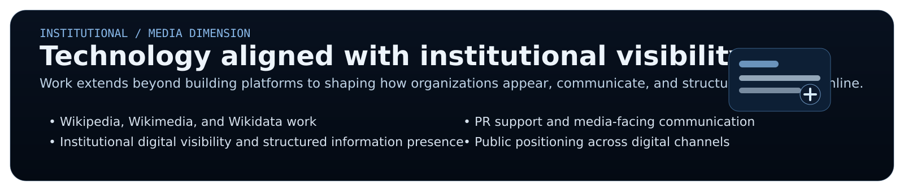

Operational systems, not isolated interfaces.
Architecture is approached as a chain of public presence, management workflows, data, automation, documents, verification, and trusted output.

Built through continuity and practical execution.
From early digital work in 2016 to official platforms, operational systems, and cyber-aware infrastructure, the focus has remained practical and execution-oriented.

Stack, automation, and engineering environment.
JavaScript, Python, Java, PHP, React, React Native, Node.js, MongoDB, PostgreSQL, GitHub, and Google Apps Script integrated into real workflows.


Secure operations and trusted communications.
Email infrastructure, authentication alignment, operational security, and dependable communications are treated as part of the engineering stack.

Technology aligned with institutional visibility.
The work extends beyond development to structured public presence, knowledge visibility, and media-facing digital positioning.

